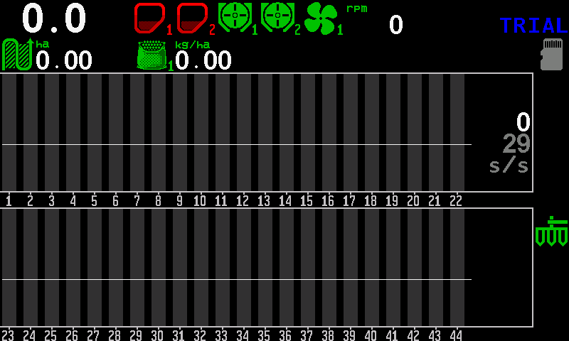

The home screen on different machines
The same panel on a planter, a drill and machines of 44 and 96 rows — standing still and at work — so you can recognise your own screen.
What the home screen shows follows the profile. The pictures below were taken on one panel, firmware 1.2.3, set up as different machines. Bench artefacts — the blue clock, the yellow speed — are explained in About the pictures.
An eight-row planter, standing still

- Travel speed. Yellow: the speed is simulated, not measured.
- Hoppers. The first green, the second red — that hopper reports empty.
- Metering units. Two dispenser shaft sensors.
- Fan. With its speed in rpm beside it.
- Area. Hectares treated on the active field.
- Population. The actual seeding rate in thousands per hectare.
- Memory card. A microSD card is in the slot.
- Tolerance. The permitted deviation in force, written above the diagram.
- Tolerance ticks. Upper and lower limit, in every column.
- Rate line. The target rate.
- Section column. Empty: the machine stands still.
- Rate field. Measured seeds per metre on top, target below.
- Manual lock. The yellow hand: product application is locked by hand. Lock application by hand
- Actuator failure. A fault of the dispenser electric motors. Motors screen
- Section numbers.
Three machines, standing still
The target rates are set, the actual rates are zero. Forty-four seed sensors in two rows of twenty-two, two hoppers, two dosing shafts, a fan, one rate field in seeds per second; the planter icon at the right is green — the machine is in working position.

Twenty-four seed sensors and twelve fertilizer sensors: two diagrams, two rate fields. Along the top two hoppers, two dosing shafts, oil pressure, battery, ignition and a fan.

Eight seed sensors in the “Precise” mode with a pressure sensor: one row of columns with the tolerance band, the rate in seeds per metre and the count per hectare.

At work
The eight-row planter seeding. Each column is one row; the tops move with every count, the hatching shows skips and doubles. Read it with The section diagram.

The 24-row drill at 12 km/h. The series starts with the columns below the line and “NOT UNDER CONTROL” over both diagrams; then the target is lowered, the columns rise above the line and the rows are under control again.

The 44-row machine at 12 km/h: two diagrams of twenty-two columns, hoppers full, dosing shafts turning.

The largest machine: 48 seed and 48 fertilizer rows, three hoppers, three dosing shafts, two fans. It, too, starts under the line and comes back under control when the target comes down to the real rate.

A real machine at work
Shot on a machine with 48 seed sensors in two rows, two hoppers, two dispenser shaft sensors and one fan, while sowing. The rate field is selected for editing: its background is lit, the target is white and the measured value grey. Unselected, it is the other way round.

Something your machine does that this page does not answer? Write to support@agriwelt.com — an engineer answers.